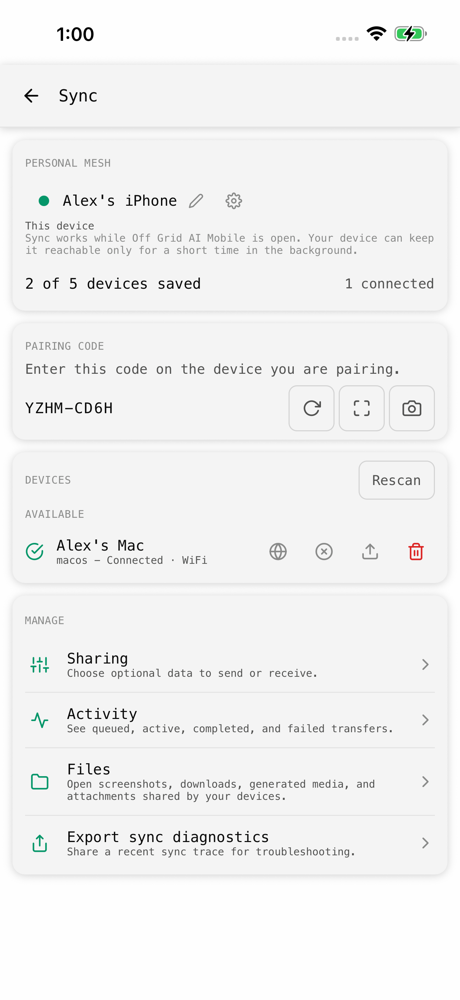
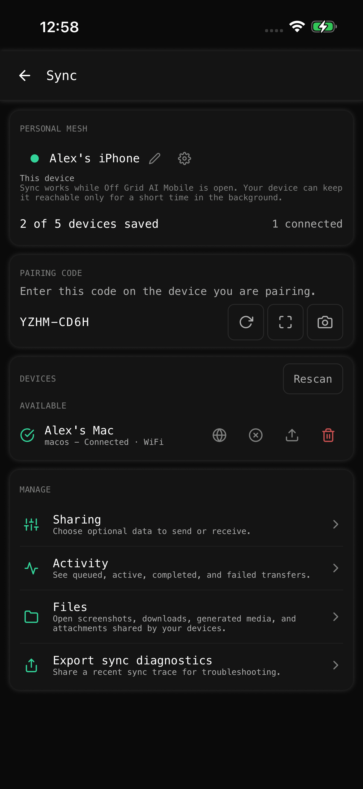
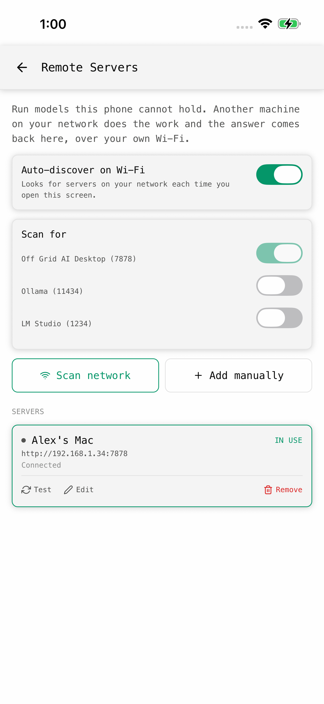
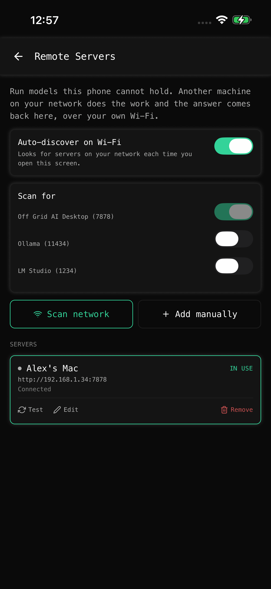
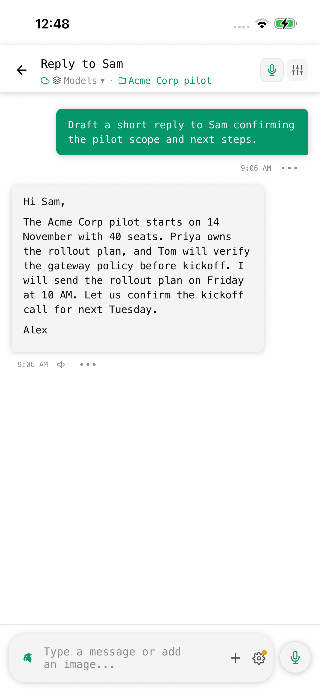
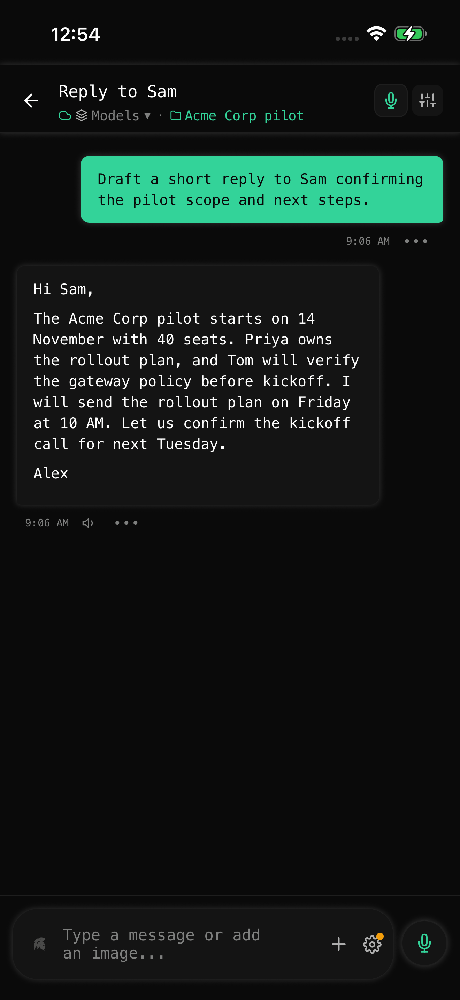

phone-sync-light.png

Six native PNG files at 1320 × 2868. Light and dark. Alex’s devices, Alex’s signature, daytime timestamps.
Sync includes the pairing code with your approval. Remote retains the real app’s Ollama and LM Studio scan switches, both off. Review this difference from the earlier brief before use.





